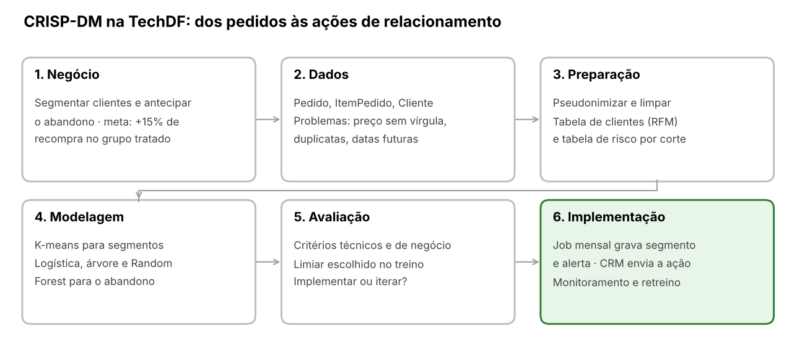
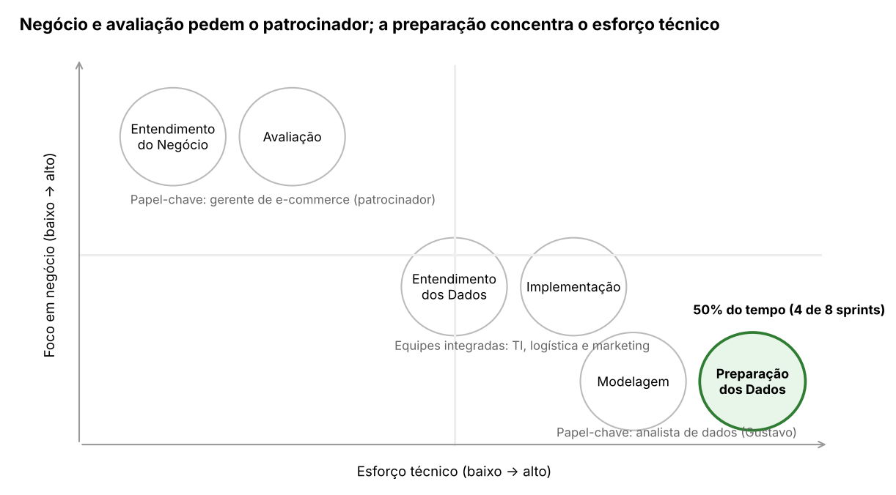
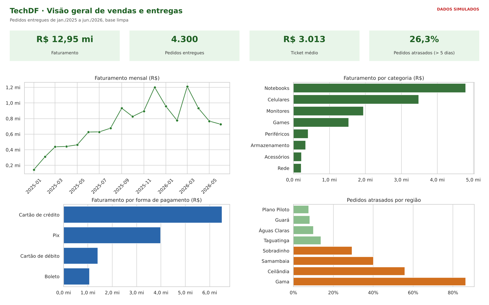
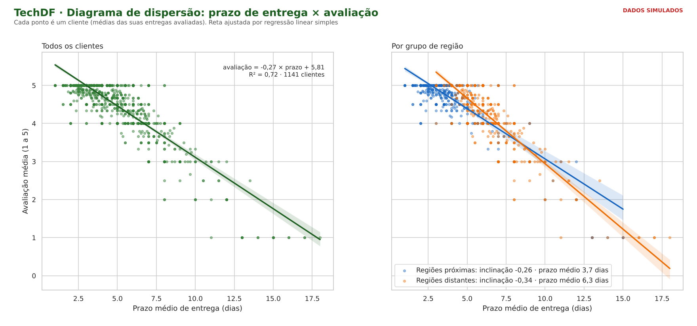
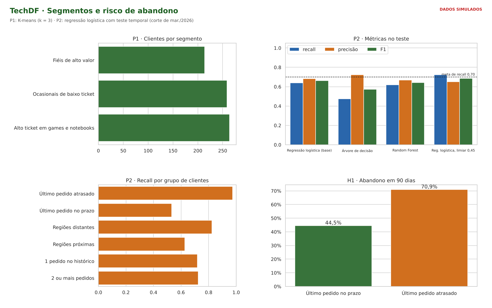

| Item | Identificação |
|---|---|
| Instituição | Centro Universitário do Distrito Federal – UDF |
| Disciplina | Ciência de Dados e Aprendizagem de Máquina – A1 |
| Docente | Profa. Kadidja Valéria |
| Autor | Gustavo Carvalho de Oliveira (matrícula: PREENCHER) – trabalho individual |
| Projeto-base | TechDF, loja on-line fictícia de informática que vende para o Distrito Federal (cenário de estudo) |
Este trabalho aplica as seis fases do CRISP-DM à TechDF para planejar e executar um projeto de mineração de dados que segmente os clientes e antecipe quais deles deixarão de comprar, a partir do histórico de pedidos da própria loja.
A TechDF vende notebooks, celulares, monitores, games e acessórios e entrega em oito regiões administrativas do DF. A loja enfrenta dois problemas: muitos clientes compram uma vez e não voltam, e as campanhas de marketing são iguais para todos. Além disso, há reclamações frequentes de atraso nas regiões mais distantes do centro de distribuição. Na análise exploratória feita na Unidade II da disciplina, com uma amostra de 20 pedidos, já apareciam dois sinais: prazos maiores em Ceilândia e notas menores quando a entrega demorava. Este projeto amplia aquela investigação para toda a base.
O CRISP-DM (Cross-Industry Standard Process for Data Mining) foi adotado por ser um processo padronizado, aplicável a qualquer setor e iterativo: as fases podem retornar umas às outras conforme surgem novas descobertas. Cada fase abaixo segue a estrutura do guia da disciplina: objetivo central, checklist de execução e aplicação prática à TechDF.
| Sigla | Significado | Na TechDF |
|---|---|---|
| CR (Cross-Industry) | Padrão aplicável a vários segmentos de mercado | Aplicado ao varejo on-line |
| SP (Standard Process) | Processo padronizado e estruturado | As seis fases guiam as duas perguntas |
| DM (Data Mining) | Focado em mineração de dados e análises preditivas | Clusterização (P1) e previsão de abandono (P2) |
Como metodologia, o CRISP-DM define as fases típicas, as tarefas de cada uma e a relação entre a área de negócio e a área técnica. Como modelo de processo, dá uma visão do ciclo de vida completo e transforma um problema abstrato ("vender mais para quem já comprou") em um roteiro acionável. Três características orientam a aplicação:
Como a TechDF é um cenário de estudo, a base de dados foi simulada com regras de negócio e erros inseridos de propósito. As metas numéricas são propostas pelo autor e deveriam ser validadas com dados reais.
| Pergunta | Técnica | Critério técnico |
|---|---|---|
| P1. Quais segmentos de clientes existem na TechDF e que ação de relacionamento oferecer a cada um? | Clusterização (K-means) e regras "segmento → ação" | Silhueta > 0,25 e cada grupo com ≥ 5% dos clientes |
| P2. É possível prever quais clientes ativos não farão nenhum pedido nos próximos 90 dias? | Classificação (regressão logística, árvore de decisão e Random Forest) | Recall ≥ 0,70 e F1 acima do modelo base |
Trabalho individual: as duas perguntas foram conduzidas por Gustavo Carvalho de Oliveira.
O objetivo de negócio é trocar a campanha única por ações de relacionamento direcionadas a cada tipo de cliente e agir antes que o cliente deixe de comprar.
Objetivo central da fase: traduzir o problema da TechDF em metas técnicas viáveis antes de investir esforço computacional.
| Pergunta | Objetivo de negócio | Critério de sucesso proposto |
|---|---|---|
| P1 | Enviar a cada segmento uma ação adequada ao seu comportamento de compra | Taxa de recompra em 90 dias pelo menos 15% maior no grupo que recebe a ação do que em um grupo de controle |
| P2 | Identificar, no início do mês, os clientes com risco de não voltar a comprar | Pelo menos 10% dos clientes alertados e contatados fazem um novo pedido em 90 dias, acima do grupo de controle |
O plano reserva para a Preparação dos Dados a maior fatia do tempo, seguindo a referência de 50% a 70% do esforço total indicada no guia.
| Fase | Sprints (1 semana) | Entrega |
|---|---|---|
| 1. Entendimento do negócio | 0,5 | Objetivos, critérios e metas técnicas |
| 2. Entendimento dos dados | 1 | Relatório de qualidade (SQL V1–V6) e KPIs |
| 3. Preparação dos dados | 4 (50% do total) | Tabela de clientes e tabela de risco por corte |
| 4. Modelagem | 1 | Modelos treinados e métricas técnicas |
| 5. Avaliação | 0,5 | Decisão: implementar ou iterar |
| 6. Implementação | 1 | Protótipo do job mensal, dashboard e monitoramento |
| Total | 8 |
Todos os dados necessários já existem no banco de pedidos da loja, mas o registro manual e o processo de checkout geram problemas de qualidade que precisam ser tratados antes da modelagem.
Objetivo central da fase: acessar, quantificar e qualificar a matéria-prima disponível para evitar falhas imprevistas na modelagem.
| Tabela | Atributos de interesse | Uso no projeto |
|---|---|---|
| Pedido | idCliente, dataPedido, idFormaPagamento, status, prazoEntregaDias, avaliacao, valorFrete | Recência, frequência, atraso e satisfação |
| ItemPedido | idProduto, quantidade, precoUnitario | Valor de cada pedido e mix de produtos |
| Produto / Categoria | 34 produtos em 8 categorias, preço de lista | Detectar preço digitado errado; perfil de compra |
| Cliente / Regiao | região administrativa, data de cadastro, programa de fidelidade, e-mail | Atraso por região; hipótese da fidelidade |
| FormaPagamento | crédito, Pix, boleto, débito | Efeito do boleto no prazo |
A exploração usou consultas SQL (KPIs 1 a 7), histogramas de prazo e avaliação e o diagrama de dispersão prazo × avaliação. As hipóteses a testar são:
| Problema | Origem | Validação SQL | Encontrado |
|---|---|---|---|
| Campos obrigatórios nulos | Falha de integração | V1 | 0 |
| Quantidade zero ou negativa | Edição manual do pedido | V2 | 25 itens |
| Data futura | Relógio do servidor / importação | V3 | 30 pedidos |
| Preço sem a vírgula (R$ 39900 no lugar de R$ 399,00) | Cadastro manual de promoção | V4 (> 10× o preço de lista) | 142 itens, R$ 20,3 mi inflados |
| Pedido duplicado | Duplo clique em "Finalizar compra" | V5 | 45 pedidos |
| Cancelado com avaliação | Status alterado depois da avaliação | V6 | 20 pedidos |
O erro de maior impacto é o preço sem vírgula: os 142 itens somariam R$ 20,3 milhões, mais que o faturamento real do período inteiro (R$ 12,95 milhões). Sem a limpeza, qualquer indicador de valor ficaria inútil.
A preparação transforma os pedidos brutos em duas tabelas analíticas, uma por cliente (P1) e outra por cliente em cada data de corte (P2). É a fase que consome mais tempo do projeto (4 de 8 sprints).
Objetivo central da fase: transformar, limpar e empacotar os dados brutos em um formato digerível pelos algoritmos.
As mesmas regras estão nas views pedido_base, item_limpo e pedido_limpo do arquivo techdf.sql e no notebook, que chegam aos mesmos totais (4.300 pedidos entregues e R$ 12,95 milhões).
| Atributo derivado | Cálculo | Usado em |
|---|---|---|
| recencia_dias, frequencia, valor_total, ticket_medio | Dias desde o último pedido; pedidos, soma e média dos últimos 12 meses | P1 e P2 |
| perc_games_notebooks | Gasto em Games + Notebooks ÷ gasto total | P1 |
| prazo_medio, perc_atrasados, ultimo_atrasado | Prazo médio; proporção e último pedido com prazo > 5 dias | P2 |
| aval_media, perc_boleto, cancelamentos | Nota média; proporção paga no boleto; pedidos cancelados | P2 |
| dias_cadastro, fidelidade, regiao_distante | Tempo de conta; participa do programa; mora em Sobradinho, Samambaia, Ceilândia ou Gama | P2 |
| alvo: abandono_90d | 1 se não houver nenhum pedido nos 90 dias após o corte; 0 caso contrário | P2 |
Para evitar vazamento de dados, todos os atributos da P2 usam apenas pedidos até a data de corte, e o alvo usa apenas os 90 dias seguintes.
Pedido é unido a ItemPedido, Produto, Cliente e Regiao pelas chaves estrangeiras. Exemplo da base limpa em SQL:
CREATE VIEW pedido_limpo AS
SELECT pb.*, s.subtotal,
CASE WHEN pb."prazoEntregaDias" > 5 THEN 1 ELSE 0 END AS atrasado
FROM pedido_base pb
JOIN (SELECT "idPedido", SUM("quantidade" * "precoUnitario") AS subtotal
FROM item_limpo GROUP BY 1) s ON s."idPedido" = pb."idPedido";
A modelagem combina uma técnica de clusterização para descobrir segmentos e classificadores supervisionados para estimar o risco de abandono, sempre começando por modelos simples.
Objetivo central da fase: aplicar técnicas matemáticas, gerar designs de teste e iterar parâmetros para descobrir padrões de alto valor.
| Meta técnica | Técnica | Justificativa |
|---|---|---|
| Segmentos de clientes | K-means com atributos em log e padronizados (StandardScaler) | Simples, rápido e com grupos explicáveis pela mediana de cada atributo |
| Abandono (modelo base) | Regressão logística com peso de classe balanceado | Referência mínima e coeficientes interpretáveis |
| Abandono (candidatos) | Árvore de decisão e Random Forest | Capturam relações não lineares e interações |
| Ação por segmento | Regras "segmento → ação" | Liga a análise ao que o marketing já sabe fazer |
| Modelo | Métrica | Meta |
|---|---|---|
| K-means | Silhueta | > 0,25 e grupos com pelo menos 5% dos clientes |
| Classificadores | Recall da classe "abandono" | ≥ 0,70 |
| Classificadores | F1 e AUC-ROC | Superar a regressão logística (modelo base) |
O recall foi priorizado porque deixar de agir sobre um cliente que vai sair custa mais do que enviar uma ação a quem voltaria de qualquer forma.
Os modelos só seguem para produção se atenderem aos critérios de negócio da Fase 1; uma boa silhueta ou um bom recall, sozinhos, não bastam.
Objetivo central da fase: medir a eficácia dos modelos finais exclusivamente pela lente dos critérios de sucesso definidos na Fase 1.
| Situação encontrada | Decisão |
|---|---|
| Critérios técnicos e de negócio atingidos | Implementar (Fase 6) |
| Recall abaixo da meta | Voltar à Fase 4 e ajustar o limiar com validação no treino |
| Candidatos não superam o modelo base | Manter o modelo mais simples |
| O alerta marca clientes demais para a equipe atender | Voltar à Fase 1 e rever a ação: priorizar os de maior risco ou atacar a causa |
Os modelos aprovados entram como um processamento mensal em lote, cujos resultados alimentam a ferramenta de e-mail marketing e o painel da gerência.
Objetivo central da fase: incorporar formalmente os modelos ao sistema ou usar as descobertas para mudar a estratégia.
| Papel | Responsabilidade |
|---|---|
| Gerente de e-commerce (patrocinador) | Aprovar metas, ações e o teste A/B |
| Analista de dados (Gustavo) | Manter o job, o monitoramento e o retreino |
| TI / banco de dados | Criar as tabelas novas e a cópia somente leitura |
| Marketing e logística | Executar as ações e tratar as causas de atraso |
A análise usa códigos pseudônimos, e o e-mail só volta a ser associado no envio da campanha, dentro da ferramenta de marketing. O cliente pode recusar comunicações de marketing a qualquer momento, e nenhuma decisão de crédito ou preço é tomada com base no modelo.
Ao final, entregam-se o relatório, o dashboard e os resultados do teste A/B. Um feedback esperado é o incômodo com mensagens em excesso; por isso, cada cliente recebe no máximo uma ação por mês.
Em uma frase: partimos de um problema real de varejo (clientes que não voltam), transformamos os pedidos em segmentos e previsões e devolvemos ao negócio uma ação por segmento e uma lista de risco.

Fluxo CRISP-DM aplicado à TechDF · 6 fases
O fluxo não é linear. No CRISP-DM, recuar não é falhar: cada volta no ciclo melhora o projeto. Os retornos que de fato aconteceram neste trabalho foram:
| De → Para | Motivo |
|---|---|
| Avaliação → Modelagem | O recall ficou em 0,64 com o limiar padrão; o limiar foi reescolhido com validação no treino |
| Avaliação → Modelagem | Teste com k = 4 para ver se o grupo de baixo ticket se dividia de forma útil |
| Avaliação → Negócio | O alerta marca a maioria dos clientes e o atraso é o sinal mais forte: talvez a ação certa seja logística, e não marketing |
O sucesso do projeto depende da comunicação entre áreas com focos opostos: as fases de negócio pedem o patrocinador, e as fases técnicas pedem o analista de dados.

Matriz de realidade do projeto · 6 fases em dois eixos
Na TechDF, o gerente de e-commerce conduz o Entendimento do Negócio e a Avaliação. O analista de dados concentra a Preparação e a Modelagem. O Entendimento dos Dados e a Implementação exigem TI, logística e marketing trabalhando juntos.
O notebook em Python que acompanha este trabalho executou as seis fases sobre uma base simulada. Três dos quatro critérios técnicos foram atingidos; o quarto (superar o modelo base) não foi, e por isso o modelo mais simples foi mantido. A avaliação também revelou que o atraso na entrega é o principal sinal de abandono.
A base foi gerada com a estrutura de um banco relacional de e-commerce (Cliente, Pedido, ItemPedido, Produto, Categoria, Regiao e FormaPagamento), com perfis de compra, prazos por região e erros inseridos de propósito. São 1.200 clientes e 4.776 pedidos de jan./2025 a jun./2026. Os números demonstram o método e não descrevem uma empresa real. O repositório (TechDF-CRISP-DM-Analysis) reúne:
techdf.sql (PostgreSQL), com validações (V1–V6), três views da base limpa, sete KPIs e duas consultas de apoio.TechDF_Analise_SQL.pdf, com cada consulta e seu resultado.A verificação encontrou 30 pedidos com data futura, 45 duplicados, 20 cancelados com avaliação, 25 itens com quantidade zero e 142 preços sem vírgula. Depois da limpeza restaram 4.691 pedidos, dos quais 4.300 entregues. Os KPIs do SQL mostram:
| Indicador | Valor | Fonte |
|---|---|---|
| Faturamento · ticket médio | R$ 12,95 mi · R$ 3.012,56 | KPI 1 |
| Pedidos entregues com mais de 5 dias | 26,3% | KPI 1 |
| Maior categoria | Notebooks (37,0% do faturamento), seguida de Celulares (26,9%) | KPI 3 |
| Cartão de crédito · Pix | 50,2% · 30,8% do faturamento | KPI 4 |
| Atraso: Plano Piloto × Gama | 7,7% × 86,4% dos pedidos (prazo médio 3,1 × 7,3 dias) | KPI 5 |
| Avaliação: até 3 dias × 8 dias ou mais | 4,94 × 2,56 | KPI 6 |
| Recompra em 90 dias após a 1ª compra: no prazo × atrasada | 64,0% × 46,1% | KPI 7 |
| Pedidos por cliente: com × sem fidelidade | 4,99 × 3,22 | Consulta B |
O KPI 5 confirma a hipótese H2: as quatro regiões mais distantes têm de 29% a 86% de pedidos atrasados, contra 8% a 14% nas próximas. O faturamento mensal (KPI 2) cresce até mar./2026 e cai nos três meses seguintes, de R$ 1,21 mi para R$ 0,73 mi.

Dashboard, página 1 – visão geral de vendas e entregas
Quanto maior o prazo médio de entrega de um cliente, menor a nota que ele dá. A reta das regiões distantes é mais inclinada e começa de um prazo médio bem maior.

Cada ponto é um cliente, com o prazo médio das suas entregas avaliadas no eixo x e a avaliação média no eixo y. A reta foi ajustada por regressão linear simples (mínimos quadrados), e o R² indica quanto da variação da nota é explicado pelo prazo.
| Grupo | Clientes | Equação da reta | R² | Prazo médio |
|---|---|---|---|---|
| Todos | 1.141 | avaliação = −0,27 × prazo + 5,81 | 0,72 | 4,9 dias |
| Regiões próximas | 645 | avaliação = −0,26 × prazo + 5,71 | 0,71 | 3,7 dias |
| Regiões distantes | 496 | avaliação = −0,34 × prazo + 6,38 | 0,73 | 6,3 dias |
Cada dia a mais de prazo vem acompanhado de cerca de 0,27 ponto a menos na avaliação. A reta também mostra um limite do modelo linear: para prazos acima de 18 dias ela prevê notas abaixo de 1, o que é impossível em uma escala de 1 a 5. A relação vale dentro da faixa observada, e não é prova de causa — é uma associação na base simulada.
Pergunta 1: entre 737 clientes ativos em jun./2026, o K-means escolheu k = 3 pelo coeficiente de silhueta (0,31; com k = 4, 5 e 6 os valores foram 0,28, 0,27 e 0,26).
| Segmento | Clientes | Traço principal (medianas) | Ação recomendada |
|---|---|---|---|
| Fiéis de alto valor | 214 (29%) | Última compra há 17 dias; 6 pedidos; R$ 17.965 gastos | Programa de fidelidade e acesso antecipado a lançamentos, sem cupom de desconto |
| Alto ticket em games e notebooks | 264 (36%) | Ticket de R$ 4.351; 75% do gasto em games e notebooks; última compra há 98 dias | Acessórios complementares e garantia estendida após a compra |
| Ocasionais de baixo ticket | 259 (35%) | 2 pedidos; ticket de R$ 593; nada em games ou notebooks | Frete grátis acima de R$ 299 e desconto no Pix |
Pergunta 2: previsão de abandono em 90 dias, com treino nos cortes de set. e dez./2025 (1.326 linhas) e teste no corte de mar./2026 (845 clientes, 53,8% de abandono):
| Modelo (teste) | Recall | Precisão | F1 | AUC-ROC |
|---|---|---|---|---|
| Regressão logística (base), limiar 0,5 | 0,640 | 0,683 | 0,661 | 0,690 |
| Árvore de decisão, limiar 0,5 | 0,473 | 0,724 | 0,572 | 0,682 |
| Random Forest, limiar 0,5 | 0,620 | 0,668 | 0,643 | 0,694 |
| Regressão logística, limiar 0,45 (final) | 0,723 | 0,651 | 0,685 | 0,690 |

Dashboard, página 2 – segmentos e risco de abandono
O notebook gera, para cada cliente ativo, o segmento, a ação e a probabilidade de abandono. Na simulação, 508 dos 737 clientes ativos (69%) receberiam alerta em jul./2026, a maioria dos segmentos "alto ticket" (225 de 264) e "baixo ticket" (218 de 259). É alerta demais para um contato individual, então a recomendação é que a equipe aborde apenas os clientes de maior probabilidade, dentro da sua capacidade, e que os demais recebam só a ação automática do segmento.
O monitoramento de drift comparou a média dos atributos do treino com a do corte mais recente. A frequência e o valor gasto subiram cerca de 40%, mas não por mudança de comportamento: a loja começou em jan./2025, e os primeiros cortes têm menos meses de histórico. O monitoramento real deve comparar janelas do mesmo tamanho.
A aplicação do CRISP-DM mostrou que o banco de pedidos da TechDF já tem os dados necessários para segmentar clientes e prever abandono, mas que o maior esforço está na qualidade desses dados: um único tipo de erro (o preço sem vírgula) mais que dobraria o faturamento. O roteiro em seis fases converteu um problema comercial em metas técnicas mensuráveis e em um plano de implementação simples, em lote e com grupo de controle.
Respondendo às perguntas de análise, com base nos dados simulados:
BRASIL. Lei nº 13.709, de 14 de agosto de 2018. Lei Geral de Proteção de Dados Pessoais (LGPD). Brasília, DF: Presidência da República, 2018.
CHAPMAN, P. et al. CRISP-DM 1.0: step-by-step data mining guide. [S. l.]: SPSS, 2000.
McKINNEY, W. Data structures for statistical computing in Python. In: PYTHON IN SCIENCE CONFERENCE, 9., 2010, Austin. Proceedings [...]. Austin: SciPy, 2010. p. 56-61.
PEDREGOSA, F. et al. Scikit-learn: machine learning in Python. Journal of Machine Learning Research, v. 12, p. 2825-2830, 2011.
VALÉRIA, K. Guia definitivo: o modelo CRISP-DM. Material didático da disciplina Ciência de Dados e Aprendizagem de Máquina. Brasília: UDF, 2026.
WASKOM, M. L. seaborn: statistical data visualization. Journal of Open Source Software, v. 6, n. 60, p. 3021, 2021.
Uso de IA: assistente de IA (Claude) usado para apoiar a escrita do código, das consultas e do texto. O notebook e o SQL foram executados e os números conferidos entre as duas fontes.